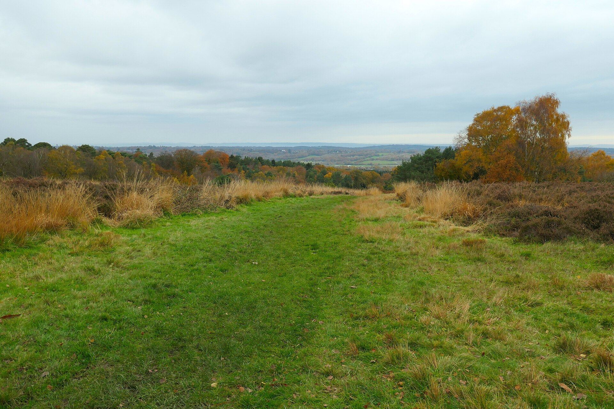
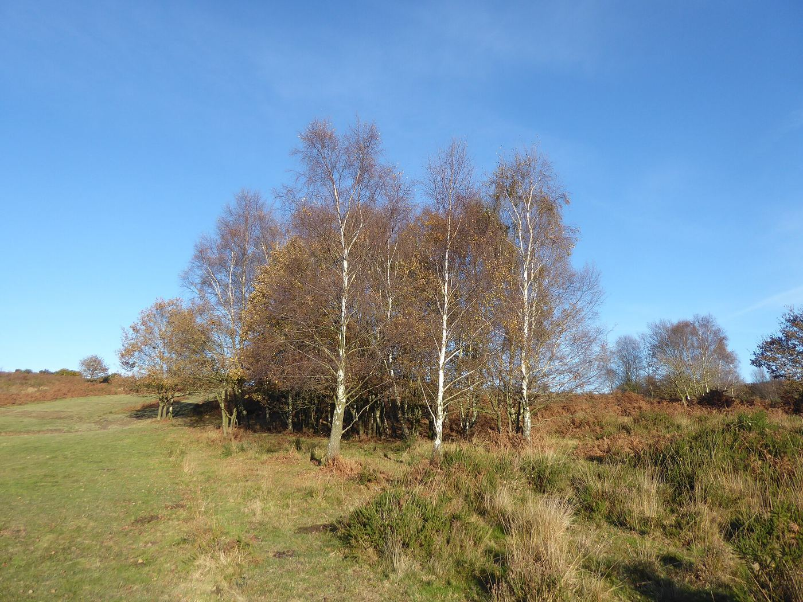

Plan your visit
Everything you need for a day in Pooh Country
Opening hours
Open every day from 11am
| Monday to Saturday | 11am – 5pm |
|---|---|
| Sundays & bank holidays | 11am – 4pm |
| Closed | 25–26 Dec, 1–2 Jan |
Getting here
By car, train, bus or bike
By car
Free roadside parking along Hartfield High Street during the week.
At weekends and in the school holidays, parking is also available at St Mary's C of E Primary School, a short walk away.
Please park considerately and keep driveways and footpaths clear.
From London by train & bus
Via East Grinstead: train from London Victoria (about 1 hour), then the 291 Metrobus towards Tunbridge Wells (about 40 minutes).
Via Tunbridge Wells: train from Charing Cross or London Bridge (about 50 minutes), then the 291 Metrobus (about 45 minutes).
Buses are less frequent on Sundays and bank holidays — check the 291 timetable.
By bike
Cyclists are very welcome. Please leave bikes in the space set aside near the entrance to the tea garden — they can't come into the main garden area.
The tearoom In which we put the kettle on
Homemade, every day
Fresh sandwiches, cakes, scones and treats, with a monthly specials menu alongside the regular one. There are options for gluten-free, vegetarian, vegan and dairy-free diets.
- Rooms
- The E.H. Shepard Room and Piglet's Tearoom
- Booking
- Walk-in only, first come first served
- Last food
- Around an hour before closing
- Groups
- We're a small tearoom and can't always seat large groups together
Book ahead
Afternoon tea in the E.H. Shepard Room
Finger sandwiches, scones with clotted cream and jam or honey, and sweet treats — a relaxed 90-minute sitting.
- Price
- £35 per person
- Party size
- 2 to 4 people
- When
- Tuesday to Friday, 12pm or 2pm. Not at weekends or in school holidays
- Notice
- 72 hours, with a £10 per person non-refundable deposit
Giving it as a present? Afternoon tea e-gift cards
The museum In which we learn where it all began
A free museum of Milne, Shepard and Christopher Robin
Artwork, toys and books tracing the life and work of A.A. Milne, E.H. Shepard and Christopher Robin — and quite a few bits of Winnie-the-Pooh.
Many items on display are precious and not for play — but there's a box of toys by the fireplace that children are welcome to enjoy.
Our story
Walks In which we go exploring
Poohsticks Bridge & the forest
We recommend calling in at Pooh Corner first — it's easy to get lost on the forest. Our team can talk you through the way to Poohsticks Bridge and where to look for Owl's, Piglet's and Pooh's houses.
Feeling adventurous?
Walk up to the Enchanted Place and its memorial plaque to A.A. Milne and E.H. Shepard, or look for Roo's Sandy Pits, the Heffalump Trap and Eeyore's Sad and Gloomy Place. Pick up our £2.50 guide map before you set off.
Good to know
Accessibility, families & dogs
Step-free access
Pooh Corner is a Grade II listed cottage, around 300 years old. The front door suits most standard wheelchairs, with a small step. Inside there are two steps into the shop, two into the museum and one to the toilet, which isn't wheelchair accessible.
At busy times, call ahead and we'll do our best to hold an accessible table.
Little ones
Children are very welcome. Toys by the fireplace are there to be played with; please help us look after the items on display in the shop and museum.
Dogs
Dog-friendly throughout the building and tea garden. Please keep dogs on a lead and mindful of other guests.
Can I reserve a table?
Do you have parking?
Is the museum free?
Can large groups visit?
Can I hire the tearoom for a party?
Do you sell gift vouchers?
Are dogs allowed?
Can't make it to Hartfield?
Take a little of Pooh Corner home
Our whole gift shop is online, with free UK delivery on orders over £30.